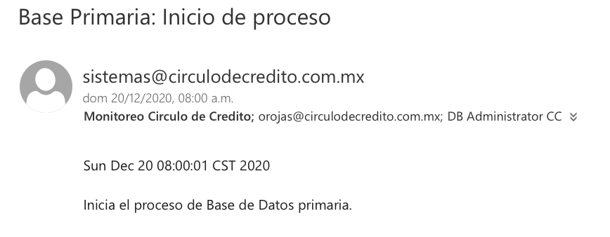
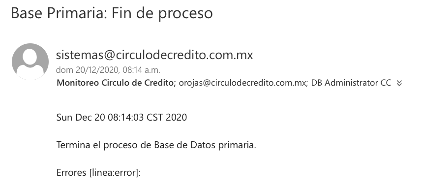
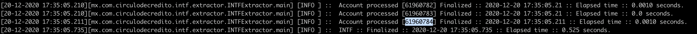
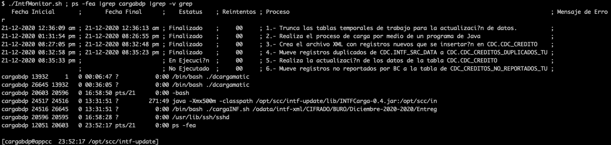
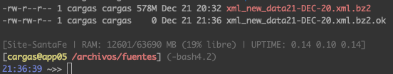
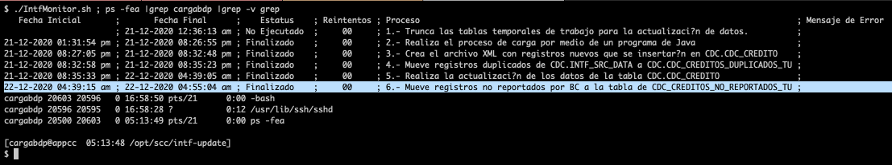

Objetivo
Circulo de Credito y Buro de Credito comparten entre si, su base de datos principal (BDP). Este proceso se realiza al rededor del dia 20 y consta de 3 etapas: 1. Circulo de Credito GENERA su BDP, 2. Circulo de Credito ENVIA su BDP, 3. Circulo de Credito GARGA la BDP de Buro de Credito. Este procedimiento es uno de los mas importantes para el area de operaciones, ya que la falla o la ejecucion a destiempo tendra repercuciones economicas para Circulo de Credito.
Generar BDP de Circulo de Credito y enviarla al SFTP de Buro de Credito
Paso 1: Preparar terminales
Previo:
✓ Revisar espacio necesario- APPCC /var/scc/intf... 30GB MINIMO
- APPCC /odata/intf-xml/CIFRADO/BURO... 30GB MINIMO
- SFTP /jaulas/burodecredito/home/user/... 12GB MINIMO
operaciones:~ operaciones$ ssh sftp -bash-3.2$ cd /jaulas/burodecredito/home/user/ENVIO/OK -bash-3.2$ ssh circuloc@207.248.70.182
Entre 7:00 y 8:00, abrir 2 terminales desde la 10.59.0.46 :
[operaciones@oper02@TERRET]$ ssh cargabdp@10.50.45.14 [cargabdp@appcc ~]$ cd /export/home2/cargabdp/bin
[operaciones@oper02@TERRET]$ ssh cargabdp@10.50.45.14 [cargabdp@appcc ~]$ cd /var/scc/intf
| NOTA: Se usa la iMac de operaciones porque usa cable eth. |
Paso 2: Ejecutar la generacion de la BDP
Aproximadamente a las 8:00, se reciben 2 correos donde se indica el inicio y termino de la BDP, sin errores.
|  |  |
|---|
| IMPORTANTE: En caso de que el mail indique errores, se deben reportar al DBA(Jorge Neira) y a Jesus Gutierrez, y esperar a que confirmen la creacion de la BDP sin errores. |
En la terminal cargabdp@10.50.45.14:/export/home2/cargabdp/bin, Ejecutar generar_bdp.sh
[cargabdp@appcc ~/bin]$ genera_bdp.sh [cargabdp@appcc ~/bin]$
Posteriormente, en la terminal 2, confirmar que haya comenzado a generar registros de la BDP en el archivo /var/scc/intf/intf-component.log y enviar status.
[cargabdp@appcc /var/scc/intf]$ tail intf-component.log
[cargabdp@appcc /var/scc/intf]$ ps -fea |grep bdp
| IMPORTANTE: No se debe ejecutar mas de una vez generar_bdp.sh, porque generará registros duplicados. |
Se envia status por correo a sysmon de los registros de la BDP generados hasta el momento, asi como la confirmacion de que se esta ejecutando el script genera_bdp.sh
Buenos días Para la generación de la Base de Datos Primaria se revisan los siguientes puntos: (1) Se revisan espacios en: [cargabdp@appcc /var/scc/intf]... 44G [admin@sftp /jaulas/burodecredito/home/user/]... 14G [cargabdp@appcc /odata/intf-xml/CIFRADO/BURO]... 102G (2) Se recibe correo de inicio y de termino del proceso de Base de Datos primaria, este ultimo no muestra error. (3) Se da inicio al proceso de GENERACION de la BDP. El proceso de generación de la BDP sigue corriendo: y lleva 10000… registros: Saludos!
Si llegara a mandar error la generacion de la BDP, se debe notificar a sysmon con copia a DBA, Jose Omar Rojas Bermudez, Ivan Alejandro Hernandez Garcia.
Buenas tardes. Se les informa que durante la generación de la BDP (Entrega) Se detectó el siguiente mensaje: logs de ejemplo: [20-10-2017 16:55:03.192][mx.com.circulodecredito.intf.extractor.INTFExtractor.main] [INFO ] :: Account processed [10214... Elapsed time :: 0.0 seconds. 20-10-2017 16:55:03.230][mx.com.circulodecredito.intf.extractor.INTFExtractor.main] [ERROR] :: reading input file
Paso 3: Monitorear los registros generados
En cargabdp@10.50.45.14:/var/scc/intf revisamos periodicamente los registros generador en el archivo intf-component.log y enviamos correo del status.
[cargabdp@appcc /var/scc/intf]$ tail intf-component.log
Paso 4: Generacion de la BDP completada
La generacion terminara cuando en intf-component.log se finaliza con los registros. Notificar por correo a Jose Omar Rojas Bermudez, Monitoreo Circulo de Credito y DB Administrator el termino y adjuntar registros totales generados.
[cargabdp@appcc /var/scc/intf]$ tail intf-component.log
Buenas tardes. Se informa el total de registros generados en la BDP Total de registros: 61960784 
Paso 5: Envio de la BDP
La generacion satisfactoria de la BDP crea dos archivos:
- 15G FECHA HORA intf10-ccredito-FECHA.intf
- 4.7G FECHA HORA intf10-ccredito-FECHA.intf.pgp
Este ultimo se transfiere de manera automatica al SFTP una ves que se termina de generar.
En la terminal admin@172.17.1.21/jaulas/burodecredito/home/user/ENVIO se monitorea envio.sh.log para ver los registros entregados.operaciones:~ operaciones$ ssh sftp -bash-3.2$ cd /jaulas/burodecredito/home/user/ENVIO -bash-3.2$ tail envio.sh.log 07/08/12-15:48:21 si existe el archivo listo.txt ya puedes empezar a transferirlo ya se esta copiando TAMANOR 25612288 contra 25612288 Ya termino
En caso de que falle el envio automatico, se enviará manualmente el archivo intf10-ccredito-FECHA.intf.gpg desde la terminal cargabdp@appcc
Validar:
- Que el archivo se haya terminado de generar
- Que el archivo se encuentre cifrado
- Se cambia su extension .pgp a .gpg
[cargabdp@appcc /var/scc/intf]$ ls -lhtr [cargabdp@appcc /var/scc/intf]$ scp intf10-ccredito(fecha).intf.gpg admin@172.17.1.21:/jaulas/burodecredito/home/user/ENVIO/OK
Cargar BDP de Buro de Credito en el BD de Circulo de Credito
Paso 1: Abrir terminales
Terminal 1: APPCC para ejecutar el script de la carga de la BDPoperaciones:~ operaciones$ ssh 10.59.0.46 [operaciones@oper02@TERRET ~]$ ssh 10.50.45.14
operaciones:~ operaciones$ ssh 10.59.0.46 [operaciones@oper02@TERRET ~]$ ssh cargabdp@10.50.45.14
operaciones:~ operaciones$ ssh sftp
Paso 2: Carga de la BDP de Buro de Credito
En esta etapa se cargara la base de datos que deposita Buro de Credito en /jaulas/burodecredito/home/user entre el 17 y 19 del mes.
Confirmar que haya depositado su BDP Buro de Credito
-bash-3.2$ cd /jaulas/burodecredito/home/user -bash-3.2$$ ls -lhtr Noviembre-2020/Entrega Cierres: -rw-r--r-- 1 burodecredito ftp 993M Nov 18 10:09 BDNAD-C.zip.pgp Noviembre-2020/Entrega Desactualizadas: -rw-r--r-- 1 burodecredito ftp 92M Nov 18 10:06 BDNAD.zip.pgp Noviembre-2020/Entrega Normal: -rw-r--r-- 1 burodecredito ftp 1.6G Nov 18 09:57 BDN.zip.pgp
Desde la iMac 10.59.0.46 conectarse a la 10.50.45.14 de Santa Fe para ejecutar carga_bdp.sh
[cargabdp@appcc 06:14 PM ~]$ carga_bdp.sh
En otra terminal esperamos a que se decifre
[cargabdp@appcc 06:14 PM ~]$ tail -f cargar_bdp.sh.log
Paso 3: Monitereo de la carga
En la terminal cargabdp@appcc monitoreamos el proceso de carga y la ejecucion del script carga_bdp.sh. Se envia status por correo periodicamente.
[cargabdp@appcc 06:14 PM ~]$ cd /opt/scc/intf-update [cargabdp@appcc 06:14 PM ~]$ ./IntfMonitor.sh ; ps -fea |grep -i carga
Buenas tardes. Se informa el estado actual del proceso de carga de la BDP: Activo y sin errores Se encuentra en el paso 5 
Paso 4: Envio del archivo XML
Cuando termina el paso 3 (Crea el archivo XML con registros nuevos que se insertar?n en CDC.CDC_CREDITO), se crea el archivo xml_new_data23-FECHA.xml en la .11 en /cloudfs/dirs, y se realiza el siguiente procedimiento:
- Se comprime en bz2
- Se copia a cargas
- Se crea archivo .ok en cargas
- Se notifica por correo a sysmon y a Monica Navil Herrera de que ya se registro y transfirió el xml
[admin@dbscc-sf1 dirs]$ sudo bzip2 -9 xml_new_dataFECHA.xml
[admin@dbscc-sf1 dirs]$ scp xml_new_dataFECHA.xml.bz2 cargas@10.50.0.71:/archivos/fuentes/registros
[cargas@app05 /archivos/fuentes/registros]$ touch xml_new_dataFECHA.xml.bz2.ok
Buenas tardes. Se transfiere el archivo XML de la BDP de Buro de Credito Diciembre 2020 El archivo se encuentra en /archivos/fuentes 
Paso 5: Fin de la carga de la BDP de Buro de credito
Concluyendo el proceso de la carga de la BDP de Buro de Credito, se notifica por correo a sysmon, Jorge Neira y Omar Rojas.
[cargabdp@appcc 06:14 PM ~]$ ./IntfMonitor.sh ; ps -fea |grep -i carga
Buen dia. Se les informa que se concluyo el proceso de carga de la BDP. Durante el cual no se presentaron incidencias o errores. 